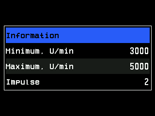

Gebläsesensor
Die Einstellungen eines Gebläsedrehzahlsensors des Hectare Mini – minimale und maximale Gebläsedrehzahl und Impulse je Umdrehung – und wann das Panel seine Alarme auslöst.
Ein Gebläsesensor zählt die Umdrehungen des Gebläses einer pneumatischen Drill- oder Einzelkornmaschine. Der Startbildschirm zeigt die Gebläsedrehzahl in U/min. Jeder Gebläsesensor hat eigene Einstellungen.
Öffnen Sie sein Kontextmenü wie in Sensoreinstellungen beschrieben.

| Parameter | Ebene | Was er bewirkt | Bereich · Werkseinstellung |
|---|---|---|---|
| „Minimum, U/min“ | Fahrer | Niedrigste zulässige Gebläsedrehzahl. Darunter löst das Panel „Drehzahl zu niedrig“ aus – aber nur, solange die Maschine sät oder in Arbeitsstellung fährt. | 500 … 9000 U/min, in Schritten von 500 · 3000 |
| „Maximum, U/min“ | Fahrer | Höchste zulässige Gebläsedrehzahl. Darüber löst das Panel „Drehzahl zu hoch“ aus – jederzeit, auch im Stand. | 500 … 9000 U/min, in Schritten von 500 · 5000 |
| „Impulse“ | Agronom | Impulse des Sensors je Umdrehung des Gebläses. | 1 … 60 · 2 |
Eine Gebläsedrehzahl, die richtig aussieht, aber Alarme auslöst, deutet meist auf falsche „Impulse“ hin: Doppelt so viele Impulse zeigen die halbe Drehzahl.
Was Säen und Fahren für das Panel bedeuten, steht unter Wann das Panel die Aussaat überwacht. Ohne Geschwindigkeitssensor wird das Minimum überwacht, solange das Panel Aussaat erkennt. Bei einem Arbeitsstellungssensor, dessen „Alarmkriterium“ „Ja“ ist, wird das Minimum in der Transportstellung nicht überwacht.
Der Statusbildschirm
Zeigt die Impulsfrequenz F= in Hz – Der Sensor-Statusbildschirm. Die Gebläsedrehzahl in U/min ist diese Frequenz × 60 ÷ „Impulse“.

Die Alarme des Gebläses und was zu prüfen ist: Gebläse und Dosierwelle: Drehzahlalarme.
Ihre Maschine tut etwas, das diese Seite nicht beantwortet? Schreiben Sie an support@agriwelt.com — es antwortet ein Ingenieur.